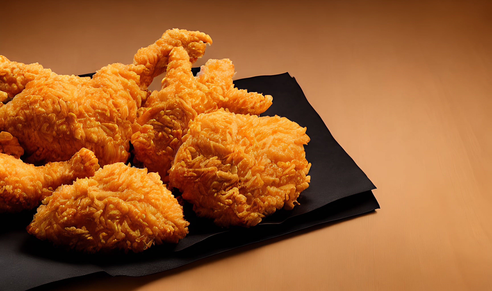

Fried Chicken Recipe

Description
Crispy and delicious fried chicken is a classic comfort food that's perfect for any occasion.
This recipe yields juicy, golden-brown chicken pieces that are crispy on the outside and tender on the inside.
Ingredients
- 4 chicken drumsticks or thighs
- 1 cup buttermilk
- 1 cup all-purpose flour
- 1 teaspoon paprika
- 1 teaspoon garlic powder
- 1 teaspoon onion powder
- Salt and pepper to taste
Steps
- In a large bowl, marinate the chicken pieces in buttermilk for at least 1 hour, or overnight for best results.
- In a separate bowl, mix the flour, paprika, garlic powder, onion powder, salt, and pepper.
- Remove the chicken from the buttermilk and dredge each piece in the seasoned flour mixture, ensuring they are well coated.
- Heat oil in a deep fryer or large skillet to 350°F (175°C). Carefully place the chicken pieces in the hot oil.
- Fry the chicken for about 10-12 minutes, turning occasionally, until the chicken is golden brown and cooked through (internal temperature should reach 165°F or 74°C).
- Remove the chicken from the oil and place it on a paper towel-lined plate to drain excess oil. Let it rest for a few minutes before serving.
Back to Home